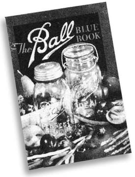
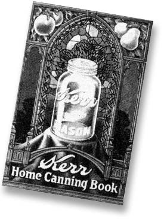

Here it is, late summer already, and the garden that was just a gleam in your eye last spring is now almost an embarrassment of riches. The tomato plants stagger under their weight of scarlet fruit, a dozen new summer squash pop out every time you turn your back on the patch and you just can't pick fast enough to keep up with the beans. Meanwhile, the roadside stands tempt you with baskets of fragrant peaches and the blackberries gleaming in the wild thickets incite you to forget the thorns and run to the house for a bucket.
Happening all at once this way, such profusion is almost too much. More than one inhabitant of the North Temperate Zone has wished that Nature could be persuaded to spread her gifts over more of the year . . . instead of overwhelming us for a few weeks and then leaving us to scrape through the bleak winter as best we can.
Nature, however, isn't given to spoiling her children-certainly not in northerly latitudes, anyhow-and we've learned to use our industry and ingenuity to provide for ourselves what a comparatively short growing season doesn't offer: a winter supply of fruits and vegetables. Of the many ways we've devised to stretch the harvest, one of the most versatile is canning.
It's true that-over the past 20 years or so-the jar-laden cellar shelf has been replaced in many households by the well-filled freezer. It's also true that freezing does have a number of advantages: The processing itself is less complicated, the produce keeps its flavor and nutrients more nearly intact, and low-acid foods can be handled without the safety precautions that are necessary when such edibles are canned. Nevertheless, any householder who's nursed his home freezer through a power break knows how vulnerable his icy supply is . . . and must be at least a little daunted by the prospect of more and longer interruptions in the coming years, as the energy crisis gets further underway. And, for the increasing number of homesteaders who get on without electricity at all, Grandma's food preservation method is the perfect solution to good cold-weather eating.
If you want to learn the art of canning-a subject that's covered briefly in MOTHER NO. 10-you can call on a wealth of excellent resources . . . first of all, the good old USDA. The Department's Home and Garden Bulletins offer solid, reliable information at prices that are hard to beat: 15 cents for Home Canning of Meat and Poultry (G 106) and 20 cents each for Home Canning of Fruits and Vegetables (G 8) and How to Make Jellies, Jams and Preserves at Home (G 56). Copies are available from the Superintendent of Documents, U.S. Government Printing Office, Washington, D.C. 20402. Residents of the North, by the way, may be glad to hear that the University of Alaska's Cooperative Extension Service offers a handy leaflet on Canning Moose and Caribou in Glass Jars.
If it's not moose but plain green beans and stewing chicken you have to deal with, you'll appreciate either of two excellent 35-cent guides put out by manufacturers of canning supplies: Kerr Home Canning Book (60 pages, Kerr Glass Corporation, Consumer Products Division, Dept. TMEN, Sand Springs, Oklahoma 74063) or The Ball Blue Book (102 pages, from Ball Brothers Company, Muncie, Indiana 47302 . . . tell 'em we sent you). Both are hardy perennials that have gone through countless editions over 50 years and more and are as thorough teachers as any beginner could hope for.
Finally, for more extensive information on food storage-not just canning, but freezing, drying, pickling, root-cellaring, smoking and squirreling stuff away in underground pits-we'd like to suggest a couple of excellent paperbacks. One is Putting Food By by Ruth Hertzberg, Beatrice Vaughan and Janet Greene ($3.95 from The Stephen Greene Press, Brattleboro, Vermont 05301). This book runs 370 pages and is the more exhaustive of the two, particularly about canning. Evelyn V. Loveday's Complete Book of Home Storage of Vegetables and Fruits ($3.00, Garden Way Publishing, Charlotte, Vermont 05445) covers the ground more briefly in 152 pages and compresses some of the information into handy chart form. If you want to build a home dryer, you'll be glad of Ms. Loveday's instructions for several different types. We like both works enough to list them in MOTHER'S Bookshelf.
Whichever help you choose, enjoy your canning adventure (do a little at a time instead of making an ordeal of the project). Follow directions carefully, and along about next January-when your gleaming jars are still bringing the taste of summer to your table-you'll know that the time and effort were well spent.-JN.
|
 |
 |
|